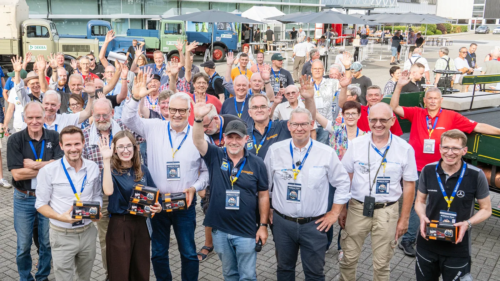

Mercedes-Benz Trucks abrió el 27 de agosto la Deutschlandfahrt 2026, una travesía dedicada a los vehículos comerciales históricos. La partida tuvo lugar en la planta de Wörth, uno de los centros industriales más importantes de la marca, y forma parte del aniversario por los 130 años del camión. La noticia fue difundida por Daimler Truck el 28 de agosto.
La caravana no es una exhibición estática. Los participantes deben cubrir aproximadamente 1.086 kilómetros por Alemania, Luxemburgo, Bélgica y Países Bajos. El recorrido termina el 6 de septiembre en Weeze, después de pasar por Lentzweiler, Hulst, Wognum, Druten y Eindhoven. Esa exigencia convierte a la muestra en una prueba real de conservación, preparación y confiabilidad.
Una historia que empezó en 1896
El aniversario remite a 1896, cuando Gottlieb Daimler construyó el vehículo que la compañía reconoce como el primer camión motorizado. Aquella máquina era sencilla, lenta y muy distinta a una tractora moderna, pero introdujo una idea decisiva: separar el transporte de carga de la fuerza animal y darle una plataforma mecánica propia.
La evolución posterior no fue lineal. Los camiones incorporaron neumáticos, cabinas cerradas, motores diésel, frenos neumáticos, cajas sincronizadas, dirección asistida y suspensiones capaces de soportar mayores pesos. Cada avance respondió a una necesidad concreta: mover más carga, reducir el esfuerzo del conductor, frenar con mayor seguridad o disminuir el tiempo fuera de servicio.
Qué vehículos participan
La Deutschlandfahrt reúne unidades de diferentes marcas, coleccionistas particulares, empresas y aficionados de toda Europa. Mercedes-Benz aporta una selección propia que incluye el Daimler Motor Truck original de 1899. En Wörth también se exhibieron camiones de varias décadas, desde modelos de capó y cabinas redondeadas hasta vehículos de competición más recientes.
La diversidad permite comparar soluciones que en su momento fueron modernas. Se observan distintas posiciones del motor, tamaños de rueda, formas de refrigeración y configuraciones de cabina. También cambia el modo de acceder a componentes: una tarea sencilla en un modelo antiguo puede requerir diagnóstico electrónico en una unidad actual.

Mecánica antigua, exigencias actuales
Conducir más de mil kilómetros con un clásico obliga a revisar combustible, lubricación, refrigeración, frenos, neumáticos y sistema eléctrico. No alcanza con que el vehículo luzca bien. Una manguera endurecida, un rulemán sin la carga correcta o una conexión fatigada puede detener una unidad cuya pieza de reemplazo ya no se consigue en una red convencional.
Por eso, la restauración seria combina fidelidad histórica y criterio operativo. Los responsables documentan referencias, fabrican componentes cuando no existen y preparan herramientas específicas. También deben respetar límites de velocidad y distancia de frenado que no son comparables con los de un camión contemporáneo.
Lo que cambió para el conductor
La cabina muestra una de las transformaciones más profundas. Los primeros vehículos ofrecían poca protección y casi ninguna asistencia. Las generaciones siguientes sumaron calefacción, aislamiento, asiento suspendido, mejor visibilidad y una ergonomía pensada para jornadas largas. Hoy aparecen control crucero adaptativo, frenado de emergencia, cámaras, conectividad y gestión digital de la flota.
La seguridad también pasó de depender casi por completo de la experiencia humana a incorporar sistemas que vigilan distancia, carril y estabilidad. Eso no elimina la responsabilidad del conductor, pero agrega capas de prevención. La evolución permite entender por qué una pieza de freno, dirección o suspensión debe elegirse por especificación y no solamente por apariencia.
Lecciones para talleres y casas de repuestos
- Registrar referencias: guardar números originales y equivalencias evita perder información cuando una pieza sale de producción.
- Revisar por sistema: una falla de temperatura puede involucrar termostato, bomba, radiador, mangueras o ventilación.
- No improvisar seguridad: frenos y dirección requieren materiales, medidas y procedimientos correctos.
- Conservar historial: kilómetros, reparaciones y modificaciones ayudan a diagnosticar problemas repetitivos.
- Prevenir inmovilizaciones: correas, retenes, filtros y conexiones envejecen incluso en unidades de poco uso.
Por qué esta historia importa en Argentina
El recorrido ocurre en Europa, pero el vínculo argentino es evidente. En el país siguen trabajando camiones de varias generaciones y la historia de Mercedes-Benz está unida a modelos que marcaron el transporte local. Talleres y transportistas conviven con tecnologías antiguas y nuevas, muchas veces dentro de una misma flota.
Ese escenario exige conocimiento transversal. Un mecánico puede atender un sistema completamente mecánico por la mañana y una unidad con diagnóstico electrónico por la tarde. La disponibilidad de repuestos, la trazabilidad y la capacidad de reconocer modificaciones previas son tan importantes como la herramienta.
Patrimonio que todavía se mueve
La Deutschlandfahrt muestra que preservar un camión no significa guardarlo. Ponerlo en ruta permite escuchar, medir y comprender cómo fue diseñado. También expone sus límites y demuestra cuánto dependía el transporte de la atención del conductor y del mantenimiento preventivo.
Celebrar 130 años no es mirar únicamente hacia atrás. La caravana conecta el primer vehículo de carga motorizado con una industria que hoy trabaja en electrificación, software y asistencia avanzada. Cambian los sistemas, pero la misión permanece: mover bienes con seguridad, disponibilidad y el menor costo posible.